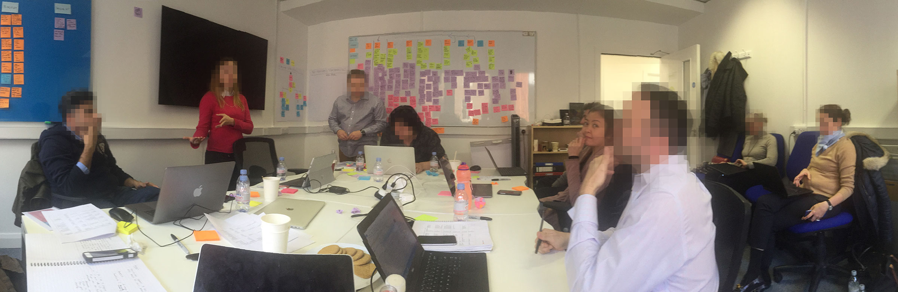
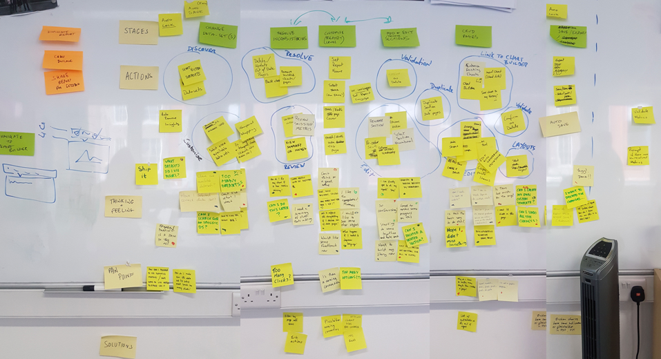
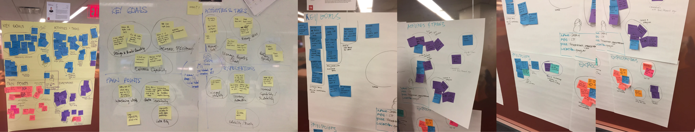
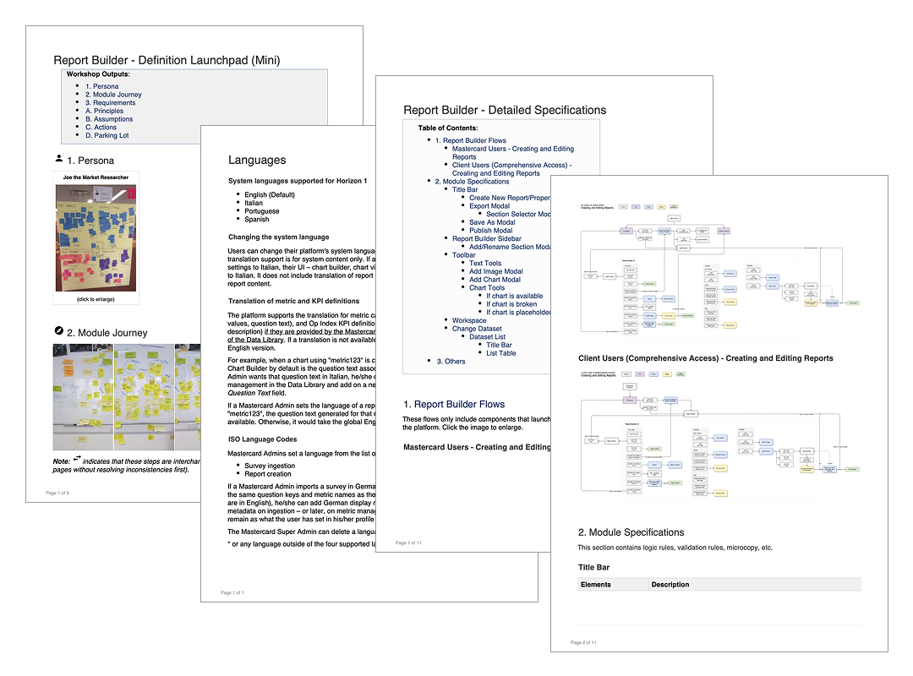
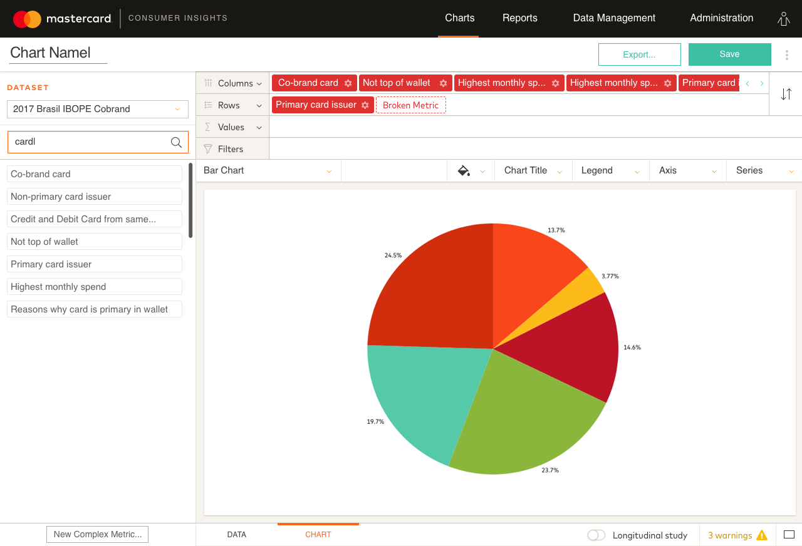
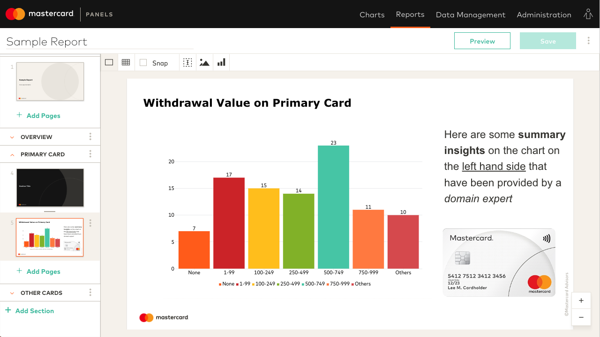
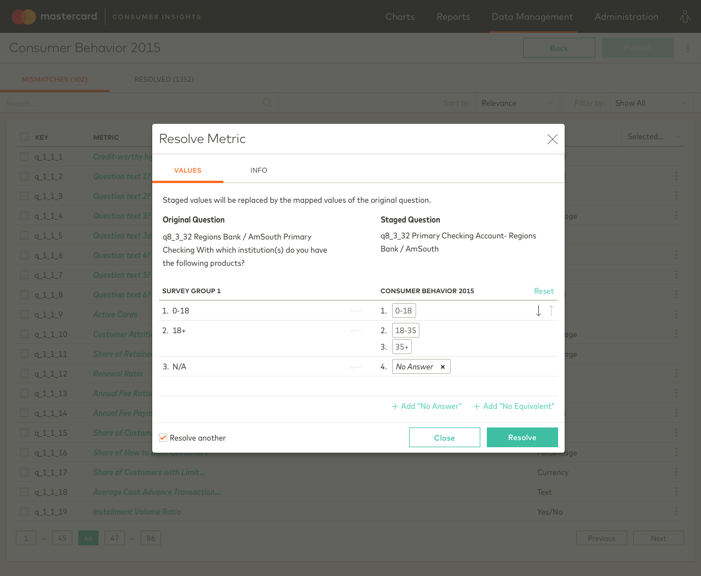

From static PowerPoint reports to a self-service analytics platform , helping Mastercard put data exploration in the hands of their clients.

From static PowerPoint reports to a self-service analytics platform , helping Mastercard put data exploration in the hands of their clients.
Background
Mastercard provided consumer behavior data to card issuers to support strategic decision-making. The insights were delivered as reports built manually in Excel and PowerPoint , a process that was time-consuming, error-prone, and offered clients no way to explore the data beyond what was already on the page.
Pain Points
Reports were built manually in Excel and PowerPoint, taking several months to complete. Analysts spent more time constructing reports than analysing the data inside them.
Data was copied and pasted manually from market research sources into PowerPoint templates, increasing the risk of errors.
Clients were limited to the insights already included in their report. Any request to explore additional metrics meant contacting their Mastercard Advisor and waiting for the entire manual process to repeat.
Reports were distributed by email and sometimes printed. There was no single place to find them, and no reliable way to know which version was the most current.
Discovery
We ran two full days of discovery workshops with the Mastercard team, who flew in from the US to work with us in person at RecommenderX in Ireland. Bringing together engineers, product managers, data specialists, and client representatives in the same room allowed us to make real-time decisions about what to prioritise for the MVP, what to park, and what was limited by technical constraints.
Following the workshops, we maintained regular calls to keep both teams aligned throughout the project.

Two days of discovery workshops with the Mastercard team in Dublin.

Journey mapping, tracing the end-to-end reporting experience.

Empathy mapping, understanding analyst and client perspectives.
Specifications
Translating workshop outputs into something a cross-functional team could build from was one of the most critical parts of the project. I owned the functional specifications across all modules, moving from a Definition Launchpad that captured personas, module journeys, and requirements, to Detailed Specifications that left no interaction state, validation rule, or microcopy to interpretation.
Hosted on Confluence, the specs became the single source of truth for design, development, and QA, comprehensive enough that they were later used as the foundation for the training manual delivered to Mastercard alongside the finished platform.

I produced detailed specifications for all the modules, every element, state, and interaction rule documented.
Design
Interaction design was a collaborative effort across design, engineering, and data teams, working through whiteboard ideation sessions before moving into detailed design.
I was responsible for the interaction design across most modules, with primary ownership of the chart builder and report builder. Within the chart builder, I designed the toolbar controls that allowed analysts to configure and customise charts. In the report builder, I designed the sidebar thumbnail interaction, giving users a visual, navigable overview of their report structure.
As part of a three-person design team, I also contributed to the data management module, which included formula builders and metric and KPI builders, interfaces where analysts could construct and define the measures that powered their reports. The team also designed the data resolution flow: when two datasets shared the same ID but had different values, the platform needed to surface that conflict clearly and guide analysts through resolving it before the data could be used.
All interface components were designed from scratch and validated by Mastercard's branding team before implementation.



Mastercard Panels, a greenfield, multi-module self-service analytics platform.
Outcome
Data was automatically ingested and dynamically updated chart and report templates, eliminating the months-long manual process of building reports from scratch.
By removing the need to manually copy and paste data from market research sources into PowerPoint, the platform eliminated a significant source of errors that had undermined report accuracy.
Clients no longer needed to contact their Mastercard Advisor to explore additional metrics or comparisons. With access to the Chart Builder and Report Builder, they could investigate the data independently and on their own timeline.
Reports were stored in a built-in library accessible to both analysts and clients, replacing scattered email threads and printed copies with a single, reliable source of truth.
A dedicated data resolution flow caught and surfaced dataset discrepancies (mismatched question phrasing or values across the same IDs), preventing errors from propagating into reports.
Prior to launch, usability testing conducted by an independent research consultancy with internal Mastercard employees validated the platform's core flows. The chart builder scored 4.1 out of 5, the highest of all modules tested. The functional specifications produced during the project were comprehensive enough to form the foundation of the training manual delivered to Mastercard alongside the finished platform.
She had a deep knowledge of the design process and on the projects we worked on she had excelled in all its stages, consistently improving the quality of our deliverables and providing great results to our customers. Tiffany led workshops on research phases, documented behaviours and flows and actively collaborated with managers, developers and the design team , whether to better understand the problems, to provide feedback, or to ensure implementation according to designs.
Lucas Petes, Former Product Designer, RecommenderX